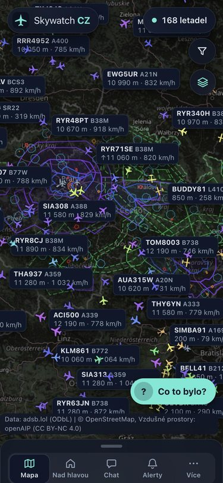
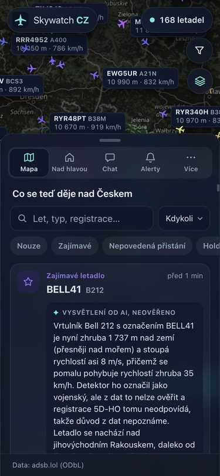
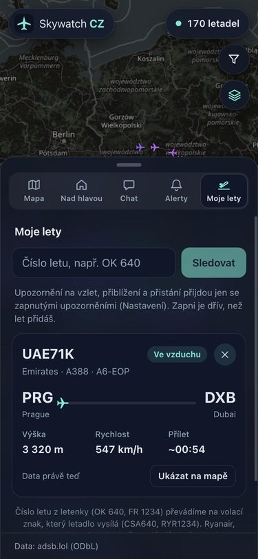
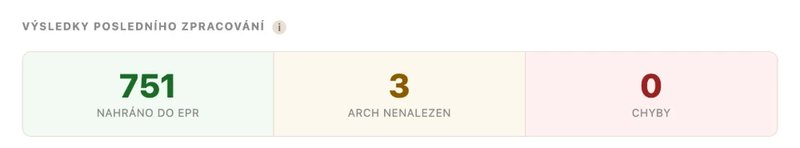

QA tester, AI a automatizace Deafcom
Deafcom provozuje platformu pro tlumočení do znakového jazyka na dálku, kterou využívají partneři v několika zemích. Testuju webové a mobilní aplikace a stavím nástroje, které zrychlují testování a hlášení chyb.
Jsem QA tester se zaměřením na AI a automatizaci, student aplikované informatiky a redaktor na Dotekománii. Ve volném čase stavím vlastní projekty.
Deafcom provozuje platformu pro tlumočení do znakového jazyka na dálku, kterou využívají partneři v několika zemích. Testuju webové a mobilní aplikace a stavím nástroje, které zrychlují testování a hlášení chyb.
Články a recenze nejen o elektromobilech.
2. ročník
Živá mapa letadel nad Českem.



Hlídá nouzové situace, nepovedená přistání nebo kroužení a krátce je popíše pomocí AI. Umí taky sledovat konkrétní let a dát vědět, když přistane.
Python, FastAPI, React, Leaflet, Claude API

Nejrychleji mě zastihnete na LinkedInu. Životopis si můžete otevřít tady (PDF).